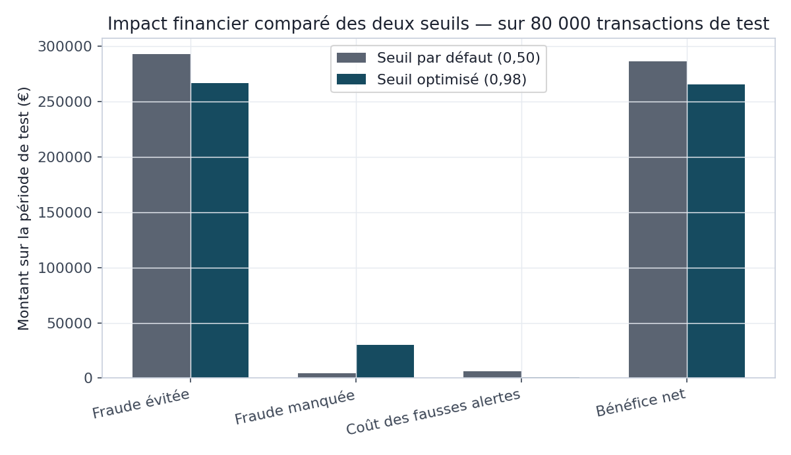

Clore les six blocs par un bilan chiffré plutôt qu'un satisfecit : un audit RGPD exécutable qui trouve de vrais manques, et un chiffrage financier qui contredit le seuil « optimal » retenu au BC03.
Les cinq blocs précédents ont produit un système technique complet ; le BC06 lui donne son cadre de gouvernance. Trois questions restées ouvertes y sont explicitement tranchées ou, à défaut, explicitement documentées comme non tranchées : le système respecte-t-il ses obligations réglementaires, quel est son impact financier réel, et que retenir de la manière dont il a été construit pour la suite. Aucune de ces trois questions n'appelle une réponse déclarative — chacune est instruite ici par une mesure ou un contrôle exécutable, dans la continuité de la méthode suivie depuis le BC01.
L'audit RGPD de la section 4 n'est pas une checklist remplie de mémoire : c'est un script qui
interroge information_schema et les artefacts réels du projet, sur le même principe
que quality_checks.py du BC01 — un contrôle est une requête, jamais une affirmation.
Cette discipline a immédiatement produit un faux positif (détaillé section 4), corrigé avant
d'être publié : la preuve, s'il en fallait une, qu'un contrôle automatisé vaut mieux qu'une
relecture manuelle, mais doit lui-même être vérifié avant d'être cru.
Les KPIs métier de la section 5 répondent à une question posée sans réponse depuis le BC03 : le seuil qui maximise le F1 (0,98) est-il le bon choix économique ? Le F1 traite un euro de fraude manquée et un euro de coût de vérification comme équivalents, ce qu'aucune banque ne fait réellement. Traduire les deux seuils déjà mesurés en euros — montant de fraude évité, coût des fausses alertes à un tarif unitaire explicite — permet de trancher sur le terrain qui compte réellement pour une décision de mise en production, plutôt que de laisser le F1 décider par défaut.
Le tableau ci-dessous ne retient que des faits vérifiables : livrable produit, résultat chiffré, et incidents réels rencontrés puis corrigés — jamais une auto-évaluation qualitative. Onze incidents de code distincts ont été rencontrés sur l'ensemble du projet (les conflits de ports avec d'autres projets locaux, purement environnementaux, ne sont pas comptés ici), tous documentés dans leur bloc d'origine.
| Bloc | Livrable clé | Résultat chiffré | Incidents réels corrigés |
|---|---|---|---|
| BC01 | Socle en étoile (staging/dwh/mart/ops) | 400 000 transactions, 10/10 contrôles qualité | 3 |
| BC02 | Analyse exploratoire | Pic de fraude 33 % à 4h ; plafond de rappel univarié ≈ 30 % | 0 |
| BC03 | LightGBM + SHAP | AUC 0,998 (vs 0,983 régression logistique) | 0* |
| BC04 | Autoencodeur + LSTM | LSTM AUC 0,997, à parité avec le BC03 | 2 |
| BC05 | API + monitoring + CI/CD | Latence 24-60 ms ; pipeline CI/CD vert sur GitHub Actions | 5 |
| BC06 | Audit RGPD + KPIs métier | 6/8 contrôles conformes ; seuil 0,50 plus rentable de 20 901 € | 1 |
* L'explicabilité SHAP du BC03 a été ajoutée après une relecture externe du livrable initial — pas un incident technique, mais une lacune de périmètre corrigée sur retour.
Huit contrôles, chacun adossé à un principe RGPD nommé, interrogent le schéma réel de la base et les artefacts produits par les blocs précédents. Six sont conformes ; deux ne le sont pas, signalés comme tels plutôt que reformulés pour paraître conformes.
| Principe | Contrôle | Statut |
|---|---|---|
| Minimisation (Art. 5.1.c) | Aucune colonne nom/email/IBAN/carte en clair (personnes physiques) | OK |
| Pseudonymisation (Art. 4.5, 25) | dim_clients.client_id est un UUID opaque | OK |
| Sécurité (Art. 32) | Aucun numéro de carte ni CVV stocké | OK |
| Droit à l'explication (Art. 22) | SHAP disponible hors-ligne (BC03) et en ligne (BC05) | OK |
| Accountability (Art. 5.2) | Journal des traitements et contrôles qualité (ops.*) | OK |
| Droits des personnes (Art. 15-17) | Aucune table de correspondance identité ↔ pseudonyme | OK |
| Conservation limitée (Art. 5.1.e) | Politique de purge automatique des transactions anciennes | KO |
| Sécurité (Art. 32) | Aucun secret commité en clair dans le dépôt | KO |
dwh.dim_agences.nom — le nom d'une agence bancaire (« Agence
Paris Opéra »), pas celui d'une personne physique. Le motif de détection (recherche du mot
« nom ») ne distinguait pas donnée d'entreprise et donnée personnelle. Corrigé en excluant
explicitement dim_agences, avec la justification en commentaire dans le script —
pas en supprimant silencieusement l'alerte.
dwh.fact_transactions
(une durée de 5 ans, usuelle en lutte anti-blanchiment, resterait à formaliser). Et
docker-compose.yml comme .env.example fixent le même mot de passe de
démonstration en clair — acceptable pour un socle de développement local, mais à
externaliser (vault, secrets GitHub Actions déjà utilisés au BC05 pour GHCR) avant tout
déploiement réel.
Sur les 80 000 transactions de test (1 221 fraudes, 297 239 € de montant frauduleux total), le seuil par défaut (0,50) laisse passer 4 355 € de fraude non détectée et coûte 6 064 € en fausses alertes (758 × 8 €, hypothèse de coût de vérification explicite) ; le seuil optimisé (0,98) laisse passer 30 344 € de fraude non détectée pour seulement 976 € de fausses alertes. Le bénéfice net — fraude évitée moins coût des fausses alertes — est supérieur au seuil 0,50 (286 820 €) qu'au seuil 0,98 (265 919 €), un écart de 20 901 € sur la seule période de test.

| Décision | Bloc | Raison |
|---|---|---|
| Générer des données synthétiques plutôt qu'utiliser un CSV Kaggle | BC01 | Contrôle total du schéma et des typologies de fraude |
| Séparer staging / dwh / mart / ops, une seule fonction de transformation | BC01 | Batch et streaming ne peuvent pas diverger |
| Split temporel plutôt qu'aléatoire pour train/test | BC03 | Éviter la fuite d'information entre passé et futur |
Exclure pays_transaction des features du modèle | BC03 | Séparateur parfait, artefact du générateur, non généralisable |
| SMOTE réservé au modèle linéaire, pas à LightGBM | BC03 | Fondement différent selon la famille d'algorithme |
| Exposer deux seuils dans l'API plutôt qu'une décision figée | BC05 | L'arbitrage coût métier relève du BC06, pas du code |
| Autoencodeur comme signal complémentaire, pas un remplaçant | BC04 | Détecte l'inconnu, pas un substitut au modèle supervisé |
| Documenter les échecs CI/CD plutôt que ne montrer que le run final | BC05 | Un pipeline non éprouvé reste un fichier de configuration |
| Limite | Bloc | Piste identifiée |
|---|---|---|
| Pas de purge/rétention, secrets en clair en développement | BC06 | Politique de rétention formalisée, vault de secrets |
| Aucune validation sur un jeu de données réel externe | BC03 | Rejouer le pipeline sur un jeu Kaggle réaliste (ex. Sparkov) |
| Le générateur ne produit pas de rafales de fraude corrélées | BC01/BC04 | Faire évoluer skimming en véritable séquence temporelle |
| Le pipeline CI/CD construit et publie, mais ne déploie pas | BC05 | Déploiement continu vers un environnement cible, rollback automatisé |
| Le coût de fausse alerte est une hypothèse, pas une mesure | BC06 | Calibrer avec les équipes fraude réelles avant toute décision de seuil |
Les six blocs de ce projet forment une chaîne continue, chacun consommant ce que le précédent a produit : un socle de données (BC01) qui rend possible un profiling honnête de ses propres limites (BC02), qui motive le passage à des modèles combinant plusieurs variables (BC03), dont les résultats sont mis à l'épreuve d'approches non supervisées et séquentielles (BC04), servis en production sous contrainte de latence et surveillés pour leur dérive (BC05), pour enfin être soumis à un audit de conformité et un chiffrage économique qui remettent en question — chiffres à l'appui — un choix qui semblait acquis (BC06). Le fil conducteur n'est pas l'absence d'erreurs : onze incidents réels ont été rencontrés et corrigés en cours de route, tous documentés plutôt que dissimulés. C'est cette discipline de vérification systématique, plus que la performance d'un modèle pris isolément, qui constitue la compétence démontrée par ce portfolio.